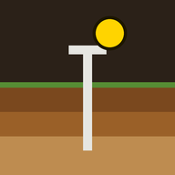

Elegí el PDF exportado desde QGIS (Archivos, Drive, WhatsApp…). Queda guardado en el teléfono y funciona sin señal.
Leyendo mapa…
Mis lotes
Todavía no cargaste ningún mapa.

Muestras de suelo georreferenciadas sobre tus GeoPDF
Elegí el PDF exportado desde QGIS (Archivos, Drive, WhatsApp…). Queda guardado en el teléfono y funciona sin señal.
Todavía no cargaste ningún mapa.
Todavía no registraste muestras en este lote.